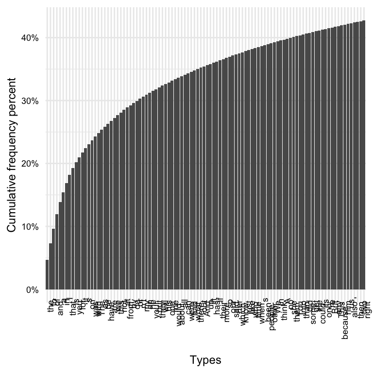

| variable | name | variable_type | description |
|---|---|---|---|
| doc_id | Document ID | numeric | Unique identifier for each document |
| description | Description | categorical | Description of the content of the document |
| modality | Modality | categorical | The form in which the document is presented (written or spoken) |
| genre | Genre | categorical | The category or type of the document |
| domain | Domain | categorical | The subject or field to which the document belongs |
| token_num | Token Number | numeric | Index number token per document |
| token | Token | categorical | Individual word forms in the document |
| lemma | Lemma | categorical | Base or dictionary form of the token |
| pos | Part of Speech | categorical | Grammatical category of the token (modified PENN Treebank tagset) |
8 Exploration
Caution
Under development.
The real voyage of discovery consists not in seeking new landscapes, but in having new eyes.
— Marcel Proust
The data speaks for itself, but only if we are willing to listen.
— Nate Silver
In this chapter, we examine a wide range of strategies for deriving insight from data in cases where the researcher does not start with a preconceived hypothesis or prediction, but rather the researcher aims to uncover patterns and associations from data allowing the data to guide the trajectory of the analysis. The chapter outlines two main branches of exploratory data analysis: 1) descriptive analysis which statistically and/ or visually summarizes a dataset and 2) unsupervised learning which is a machine learning approach that does not assume any particular relationship between variables in a dataset. Either through descriptive or unsupervised learning methods, exploratory data analysis employs quantitative methods to summarize, reduce, and sort complex datasets and statistically and visually interrogate a dataset in order to provide the researcher novel perspective to be qualitatively assessed.
8.1 Orientation
The aim of this section is to provide an overview of exploratory data analysis (EDA). We will delve into various descriptive methods, such as frequency analysis and co-occurrence analysis, which are fundamental tools in linguistic research. However, our exploration won’t stop there. We will also integrate modern exploratory methods from unsupervised learning approaches, including clustering, topic modeling, and vector space modeling. This may sound overwhelming, but I will strive to keep explanations clear and concise, ensuring their practicality and relevance to your linguistic inquiries is apparent. To this end, we will provide real-world examples to exemplify the applicability of these methodologies.
8.1.1 Research goal
As discussed in Section 3.2.1 and Section 4.3.1, the goal of exploratory data analysis is to discover, describe, and posit new hypotheses. The researcher does not start with a preconceived hypothesis or prediction, but rather the researcher aims to uncover patterns and associations from data allowing the data to guide the trajectory of the analysis. This analysis approach is best-suited for research where the literature on a research question is limited, or where the researcher is interested in exploring a new research question.
Since the researcher does not start with a preconceived hypothesis, the researcher is not able to test a hypothesis and generalize to a population, but rather the researcher is able to describe the data and provide a new perspective to be qualitatively assessed. This is achieved through an iterative and inductive process of data exploration, where the researcher uses quantitative methods to summarize, reduce, and sort complex datasets and statistically and visually interrogate a dataset letting the data guide the analysis.
8.1.2 Approach
The approach to exploratory data analysis is iterative and inductive. To reign in the analysis, however, it is important to have a research question to guide the analysis. The research question will often be broad and exploratory in nature, but it will provide a framework for the analysis including the unit of analysis and sometimes the units of observation. Yet the units of observation can be modified as needed to address the research question. Furthermore, the methods applied to the data can evolve as the research unfolds. The researcher may start with a descriptive analysis and then move to an unsupervised learning approach, or vice versa. The researcher may also pivot the approach to explore new questions and new variables. Ultimately, the researcher is guided by the data and the research question, but the researcher is not bound by a preconceived hypothesis or prediction.
With a research question and relevant data in hand, we can look to conduct the analysis. The workflow for exploratory data analysis is as follows:
- Identify and extract the variables of interest in the dataset
- Inspect the dataset to ensure the quality of the data and understand its characteristics
- Interrogate the dataset using descriptive analysis and/ or unsupervised learning
- Interpret the results of the analysis to determine if they are meaningful and if they provide a new perspective on the research question
Let’s elaborate on each of these steps. First, we want to consider our research question and identify the variables of potential interest to provide insight to our question. Starting with a transformed dataset means that much of the data preparation has already been done, but we may need to further transform the data, either up front or as we explore the data. In text analysis, this often includes identifying and extracting the linguistic variables of interest, such as words, \(n\)-grams, sentences, etc. Depending on the annotation scheme, other linguistic variables may be of interest, such as part-of-speech tags, syntactic dependencies, semantic roles, etc.
We may also want to consider the operational measures of the variables derived from the text, such as frequency, dispersion, co-occurrence, keyness, etc. We may also want to consider the other variables in the dataset that may be target for grouping or filtering the dataset, such as speaker information, document information, linguistic unit information, etc.
During or after extracting and operationalizing the variables of interest, we want to inspect the dataset to ensure the quality of the data and understand its characteristics. This may include checking for missing data, checking for outliers, checking for errors, checking for inconsistencies, etc. We may also want to inspect the distribution of the variables of interest to understand their characteristics. Summary statistics and visualizations, such as those covered in Section 3.1, are useful for inspecting the dataset and also provide a foundation for interrogating the dataset.
Once we have identified the variables of interest and inspected the dataset, we can interrogate the dataset using descriptive analysis and/ or unsupervised learning. Descriptive analysis is a set of methods that statistically and/ or visually summarizes a dataset. Descriptive analysis can be used to describe a dataset and to identify linguistic units (frequency analysis) or co-occuring (co-occurrence analysis) units that are distinctive to a particular group or sub-group in the dataset. Unsupervised learning is a machine learning approach that does not assume any particular relationship between variables in a dataset. Unsupervised learning can be used to identify groupings () in the data including patterning of linguistic units, identifying semantically similar topics, and estimating word context relationships.
Exploratory methods will produce a set of statistical and/ or visual results. The researcher must interpret these results to determine if they are meaningful and if they provide a new perspective on the research question. Many times the results from one method will lead to new questions which can be explored with other methods. In some cases, the results may not be meaningful and the researcher may need to return to the data preparation stage to modify the dataset or the variables of interest. As the aim of exploratory analysis is just that, to explore, the researcher can pivot the approach to explore new questions and new variables. Ultimately, what is meaningful is determined by the researcher in the light of the research question and the potential insight obtained from the results.
8.2 Analysis
In this section will discuss exploratory data analysis (EDA) for linguists, with a focus on descriptive methods such as frequency analysis and co-occurence analysis, as well as unsupervised learning approaches such as clustering, topic modelling, and word embedding. To ground the discussion, we will use the the Manually Annotated Sub-Corpus (MASC) of the American National Corpus. The data dictionary for the masc_transformed dataset is shown in Table 8.1.
We will work with the MASC as our dataset to approach multiple research questions. I’ll read in the dataset, drop the description and domain variables to focus on variables of interest, and preview the dataset in Example 8.1.
Example 8.1
# Read and subset the MASC dataset
masc_tbl <-
read_csv("../data/masc/masc_transformed.csv") |>
select(-description, -domain)
# Preview the MASC dataset
masc_tbl |>
slice_head(n = 5)> # A tibble: 5 × 7
> doc_id modality genre token_num token lemma pos
> <dbl> <chr> <chr> <dbl> <chr> <chr> <chr>
> 1 1 Written Letters 0 december december NNP
> 2 1 Written Letters 1 1998 1998 CD
> 3 1 Written Letters 2 your your PRP$
> 4 1 Written Letters 3 contribution contribution NN
> 5 1 Written Letters 4 to to TO8.2.1 Descriptive analysis
Descriptive analysis techniques are used to gain insights from text data without interpreting or making conclusions about the actual meaning or context. Common techniques include frequency analysis to determine the most frequent words or phrases; keyword analysis to identify important words; co-occurrence analysis to see what words tend to appear together; and dispersion analysis to see how words or topics are distributed throughout a document or corpus.
Using the MASC dataset, we will entertain questions such as:
- What are the most frequently occurring words in the dataset?
- Are there differences between spoken and written discourses?
- Are there key words or phrases that distinguish genres?
Along the way, we will introduce some fundamental concepts in text analysis such as tokens and types, raw and relative frequency, and dispersion. In addition, we will apply various descriptive analysis techniques and visualizations to explore the dataset and identify new questions and new variables of interest.
Frequency analysis
At its core, frequency analysis is a descriptive method that counts the number of times a linguistic unit (i.e. word, n-gram, sentence, etc.) occurs in a dataset. The results of frequency analysis can be used to describe the dataset and to identify units that are linguistically distinctive or distinctive to a particular group or sub-group in the dataset.
In the masc_tbl data frame we have the linguistic unit token which corresponds to the word-level annotation of the MASC. To perform a basic frequency analysis, we start by using the count() function from the dplyr package to count the number of times each token occurs in the dataset. We’ll sort and list the top word tokens, as seen in Example 8.2.
Example 8.2
# Token count, sorted
masc_tbl |>
count(token, sort = TRUE)> # A tibble: 39,475 × 2
> token n
> <chr> <int>
> 1 , 27113
> 2 . 26257
> 3 the 23373
> 4 to 12998
> 5 of 11865
> 6 and 11464
> 7 a 9779
> 8 in 7632
> 9 I 7354
> 10 that 6596
> # ℹ 39,465 more rowsThe output of this frequency tabulation in Example 8.2 is a data frame with two columns: token and n. The token column contains the unique tokens in the dataset, and the n column contains the frequency of each token. The data frame is sorted in descending order by the frequency of tokens. Now the result includes over 39,000 rows –which corresponds to the number of unique tokens in the dataset. Each unique token is a type. In other words, a token is an instance of a type. Therefore, there will always be more tokens than types, unless every word in a corpus is unique, in which case the number of tokens and types will be the same.
There is something else we should notice. As we can see among the most frequent tokens are non-words such as ,, and .. As you can imagine, given the conventions of written and transcriptional language, these tokens are very frequent. For a frequency analysis of word tokens, however, we probably should remove them. In the masc_tbl data frame, the pos variable has a value of PUNCT (e.g. ,, .) or SYM (e.g. $, #) for punctuation and symbols, respectively. We can use this information to remove tokens that are tagged with either of these values. We can do this by filtering the data frame to only include tokens that are not tagged with PUNCT or SYM, as seen in Example 8.3.
Example 8.3
# Filter out tokens with PUNCT or SYM for pos
masc_tbl <-
masc_tbl |>
filter(pos != "PUNCT" & pos != "SYM")
# Token count, sorted (again)
masc_tbl |>
count(token, sort = TRUE)> # A tibble: 39,343 × 2
> token n
> <chr> <int>
> 1 the 23373
> 2 to 12998
> 3 of 11865
> 4 and 11464
> 5 a 9762
> 6 in 7632
> 7 I 7354
> 8 that 6596
> 9 is 5230
> 10 you 4552
> # ℹ 39,333 more rowsNow we are only viewing the most frequent tokens in the dataset. To appreciate the frequency distribution of the tokens, let’s create three frequency plots: 1) all the types, 2) the top 100 types, and 3) the top 10 types in Figure 8.1.
# Plot token count for all types
# remove x-axis labels and title
# order types by token frequency
masc_tbl |>
count(token) |>
arrange(desc(n)) |>
ggplot(aes(x = reorder(token, desc(n)), y = n)) +
geom_col() +
labs(x = "Types", y = "Token frequency") +
theme(axis.text.x = element_blank())
# Plot token count for top 100 types
masc_tbl |>
count(token) |>
arrange(desc(n)) |>
slice_head(n = 100) |>
ggplot(aes(x = reorder(token, desc(n)), y = n)) +
geom_col() +
labs(x = "Types", y = "Token frequency") +
theme(axis.text.x = element_text(angle = 90, hjust = 1.3))
# Plot token count for top 10 types
masc_tbl |>
count(token) |>
arrange(desc(n)) |>
slice_head(n = 10) |>
ggplot(aes(x = reorder(token, desc(n)), y = n)) +
geom_col() +
labs(x = "Types", y = "Token frequency") +
theme(axis.text.x = element_text(angle = 65, hjust = 1.3))


The distributions we see in Figure 8.1 are highly right-skewed (in Figure 8.1 (a) in a very extreme way!). This is typical of natural language distributions, notably documented by George Kingsley Zipf (Zipf 1949). This type of distribution approaches the theoretical Zipf distribution. A Zipf (or Zipfian) distribution is characterized by the fact that the frequency of any word is inversely proportional to its rank in the frequency table. In other words, the most frequent word occurs approximately twice as often as the second most frequent word, three times as often as the third most frequent word, and so on.
As we can see, our distribuions to not follow the Zipf distribution exactly. This is because the Zipf distribution is a theoretical distribution, and the actual distribution of words in a corpus is affected by many factors, most notably the size of the corpus. The larger the corpus, the closer the distribution will be to the Zipf distribution.
The observations captured in the Zipf distribution is key to understanding quantitative text analysis. It demonstrates that most of the tokens in a corpus occur (relatively) infrequently, while a small number of tokens occur very frequently. In fact, if we calculate the cumulative frequency of the tokens in the masc_tbl data frame, we can see that the top 10 types account for over 20% of the tokens in the dataset –by 100 types that increases to over 40%, as seen in Example 8.4.
Example 8.4
# Calculate cumulative frequency
token_cumul_freq <-
masc_tbl |>
count(token) |>
arrange(desc(n)) |>
mutate(cumulative = cumsum(n)) |>
mutate(percent = cumulative / sum(n))
# Plot cumulative frequency of top 10 types
token_cumul_freq |>
slice_head(n = 10) |>
ggplot(aes(x = reorder(token, desc(n)), y = percent)) +
geom_col() +
labs(x = "Types", y = "Cumulative frequency percent") +
scale_y_continuous(labels = scales::percent) +
theme(axis.text.x = element_text(angle = 65, hjust = 1.3))
# Calculate cumulative frequency of top 100 types
token_cumul_freq |>
slice_head(n = 100) |>
ggplot(aes(x = reorder(token, desc(n)), y = percent)) +
geom_col() +
labs(x = "Types", y = "Cumulative frequency percent") +
scale_y_continuous(labels = scales::percent) +
theme(axis.text.x = element_text(angle = 90, hjust = 1.3))

If we look at the types that appear within the first 100 most frequent, you can likely also appreciate another thing about language use. Let’s look at the top 100 types in Example 8.5. I’ll extract the words and list them in ?tbl-eda-masc-count-top-100.
Example 8.5
# Top 100 types
token_cumul_freq |>
slice_head(n = 100) |>
pull(token) |>
str_c(collapse = ", ") |>
str_view()> [1] │ the, to, of, and, a, in, I, that, is, you, for, it, 's, on, was, with, The, as, be, have, are, we, this, not, at, from, by, do, or, n't, my, an, he, your, but, they, will, his, one, me, would, about, all, can, were, had, what, there, out, And, up, It, has, if, their, more, so, our, said, her, which, know, just, like, who, time, when, s, been, people, other, We, In, think, A, no, she, them, You, into, than, did, some, get, He, could, its, only, 're, But, any, This, because, him, us, also, ', then, two, rightThe most frequent words are not content words, but rather function words. This is because function words are used to express grammatical relationships between content words. In other words, function words are used to express the structure of language. This is why function words are also called grammatical words.
- Raw frequency (counting)
- Linguistic units (characters, words, n-grams, sentences, etc.)
- Raw frequency (absolute frequency)
- Zipf’s law (rank-frequency)
- Issues with raw frequency (\(f\)):
- Incomparable across sub-corpora, corpora, and time
- Term frequency (normalization)
- Relative frequency (proportional frequency)
- Makes samples (more) comparable (divergence of corpus sizes can influences validity of comparison)
- Issues with term frequency (\(tf\)):
- Does not reveal the distribution of terms across a text or set of texts
- Does not highlight distinctive words
- One way to address this is to filter out ‘stop words’ (i.e. the, a, an, etc.)
- Adjusted frequency (relevance)
- Dispersion (distribution)
- \(idf\) (inverse document frequency)
- … Juilland’s \(D\) (equal/ non-equal parts)
- Gries’ \(DP\) Deviation of Proportions (DP)
- Weights
-
\(tf-idf\) (term frequency-inverse document frequency)
- Distinctive words (Used to identify the most relevant keywords in a given text.)
- Issues with \(tf-idf\): Does not reveal the context of terms, Does not reveal the relationship between terms
- weighted log odds (
tidylopackage)- Distinctive words (Used to identify the most relevant keywords in a given text.)
- Advantage over \(tf-idf\): does a better job dealing with different combinations of words and documents having different counts.
-
\(tf-idf\) (term frequency-inverse document frequency)
- Dispersion (distribution)
Co-occurrence analysis
- Concordance
- KWIC (keyword in context) This section will discuss keyword in context (KWIC) analyses, which is used to identify meaningful keywords in a given text. It will discuss various ways to analyse a text and extract keywords, as well as discuss various practical applications of KWIC in linguistics.
- Collocation
- PMI (pointwise mutual information)
- Dice’s coefficient
- …
8.2.2 Unsupervised learning
- Overview of unsupervised learning
Unsupervised learning which is a machine learning approach that does not assume any particular relationship between variables in a dataset … (expand on this definition)
- An overview of the some of the questions we will entertain in this section.
Clustering
This section will discuss clustering techniques, which are used to partition data into clusters based on similarity. It will discuss various approaches to clustering, such as k-means and hierarchical clustering, as well as discuss their use cases in linguistics.
- K-means (pre-defined number of clusters)
- Hierarchical clustering (dendrogram)
Topic modeling
This section will discuss topic modeling techniques, which are used to identify and group semantically similar topics in unstructured data. It will discuss various approaches to topic modelling, such as Latent Dirichlet Allocation (LDA), and discuss their applications in linguistics.
- LDA (latent Dirichlet allocation)
- LSA (latent semantic analysis)
Word embedding
This section will discuss word embedding techniques, which are used to represent words in a vector space. It will discuss various approaches to word embedding, such as Word2Vec and GloVe, and discuss their applications in linguistics.
- Word2vec (skip-gram)
- GloVe (global vectors for word representation)
8.3 Summary
Exploratory data analysis is a set of methods that can be used to explore a dataset and to identify new questions and new variables of interest. The methods can be used to describe a dataset and to identify linguistic units that are distinctive to a particular group or sub-group in the dataset. The methods can also be used to identify semantically similar topics in unstructured data. The results of exploratory analysis can be used to inform the development of a hypothesis or to inform the design of a machine learning model.